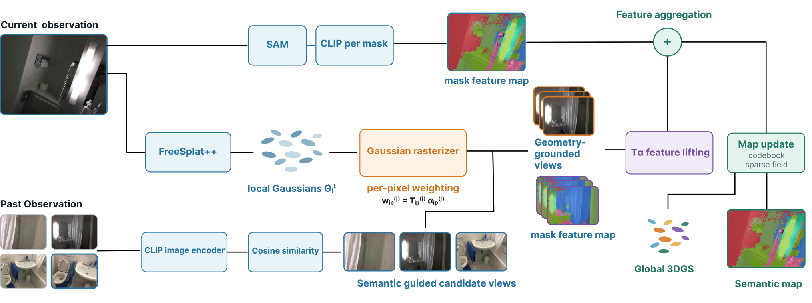

Paper Analysis
01 · What Is Recalled, and What Is Already Known?
当前视图可能只看到一个区域的一部分，过去视图却保留了更清楚的外观。RecallGS 的问题是如何让这类历史信息帮助新生成高斯的语义赋值。其检索对象是过去的图像及密集特征图，不是从语言模型参数中生成场景描述。
系统建立在 EmbodiedSplat-fast 与 FreeSplat++ 上。后者预测局部 Gaussian triplets：中心、融合置信度和隐特征，再通过加权中心更新与 GRU 融合进入全局状态。用于渲染时才解码协方差、不透明度与颜色。这里的局部 triplet 不能直接当作完整高斯渲染参数。
每个输入显式给出 I、K、E，即 RGB、内参与 camera-to-world 位姿。因此“在线”是按观测顺序更新地图，不等于它已经解决未知相机的单目 SLAM。语义召回机制无需额外训练，但几何骨干与基础视觉模型仍然依赖预训练。
Paper Analysis
02 · Reading the Original Figure

Thanh-Khoi Nguyen, Thien-Phuc Tran, and Minh-Triet Tran · Original figure, unmodified · CC BY 4.0 · Paper & Caption ↗
Figure 1 上路从当前图像经 SAM 取得区域，再提取 CLIP 区域特征；中路用 FreeSplat++ 生成当前局部高斯；下路用整图 CLIP 描述子在历史中搜索相似帧。整图描述子负责选帧，区域或像素特征负责给高斯赋语义，两者不能混成一份特征。
接着把当前局部高斯放到候选历史相机中渲染，统计它们在每张图像中的实际混合贡献。只有较有几何支持的历史继续进入融合。右侧沿高斯的整个二维投影区域加权提取历史特征，再与当前语义结合，更新全局 codebook 和稀疏系数字段。
默认先召回十六帧，再选三帧进行历史融合。不是每个高斯都必须用这三帧：某个高斯在其中不满足贡献阈值，就不从那一帧读取。没有有效历史时保留当前特征，避免无证据时强行更新。
Paper Analysis
03 · Semantic Similarity Is Only the First Filter
历史窗口 H 保存最多 W 个近期观测，条目含 RGB、相机参数、整图描述子和像素对齐 CLIP 特征。窗口满后丢弃最旧观测。正文将 W 定义为容量，却没有在实现细节中明确默认数值，因此不能凭 B_rec=16 推定历史总共只存十六帧。
当前整图向量与窗口内各向量做余弦相似度，取 Top-B_rec。它便宜，但可能选中风格相似却位于另一处的区域，也可能漏掉只在局部与当前相关的旧帧。后续几何重排只能检查已召回候选，无法找回第一步排除的正确证据。
这里还需分清三种容量：近期观测窗口受 W 限制；每个高斯保存固定长度 L 的 codebook 索引和系数；全局 codebook 和高斯地图却可随新观测增长。局部缓存有上限，不意味着整个系统总存储是固定的。
rho_j = cosine(CLIP(I_t), CLIP(I_j)) R_t = Top-16 historical observations within the recent W-frame window Gaussian semantic feature: s_i = sum_k Omega_i,k * C[Idx_i,k] Per-Gaussian sparse coefficients are bounded; the global codebook can grow.
Paper Analysis
04 · Rendering Responsibility as a Geometric Test
高斯中心落进图像，只能说明投影位置在视野内，不能说明表面真的可见。RecallGS 用 w=T×a 表示一个高斯对像素的渲染贡献：a 是投影核乘不透明度，T 是前面高斯透过来的剩余光量。前景遮挡越强，后方高斯的 T 越小。
把一个高斯在整张图上的 w 累加得到 A。若 A>0.9，则在该候选视图中视为有支持；再计算当前局部高斯中获支持的比例 κ，对视图排序，取前三。A 是未归一化像素和，依赖图像分辨率、投影面积和不透明度，不是校准的可见概率。
教学例子：两个投影同样在画面内的高斯，若一个在十个像素各贡献 0.1，则 A=1，可通过 0.9 阈值；另一个被遮挡后每像素只剩 0.01，则 A=0.1，不通过。这个例子只解释权重机制，不代表真实遮挡估计必然正确。
一个重要限制在结论中明确给出：grounding 只渲染当前局部高斯，未把全局地图的遮挡物全部纳入。历史图中确实挡住目标的物体若不在当前局部集合，T 仍可能过大。因此它验证的是局部重建下的渲染支持，不是物理可见性的真值。
w_i,p^(j) = T_i,p^(j) * a_i,p^(j) A_i^(j) = sum_p w_i,p^(j) kappa_j = mean_i [A_i^(j) > 0.9] V_t = Top-3 cameras by kappa_j within R_t
Paper Analysis
05 · Fusion over a Footprint, Not One Pixel
对高斯 i 和支持它的历史视图 j，先用 w 对历史密集特征 F_j(p) 作加权平均。这样一个高斯接收的是其整个投影范围的证据，而不是中心像素一次采样。不同历史视图还按累计贡献加权，再与当前特征相加并归一化，历史强度 λ=0.75。
这种设计降低中心恰好落在噪声或遮挡边缘时的敏感性，但投影范围跨过多个物体时也会混合不同语义。面积大或高不透明度的观测具有更大影响，不等于它的语义质量更高。
原文 Eq.12 有一处符号不一致：跨视图融合分子使用 A_i^(j)，分母写 W_i^(j)，正文没有单独定义后者。下方只写清楚无歧义的单视图聚合及最终融合。若复现，必须向实现或作者确认跨视图归一化，不能默默把 W 替换为 A 后声称是原公式。
新增模块位于语义证据路径，未引入新的训练 loss，也未报告通过语义梯度修改高斯中心或相机位姿。它借助几何让语义融合更可靠，不能反向表述为“语义优化了重建几何”。
s_hist(i,j) = sum_p w_i,p^(j) F_j(p) / (A_i^(j) + epsilon) s_final(i) = normalize(s_current(i) + 0.75 * s_history(i)) Eq.12 uses A in the cross-view numerator and an undefined W in its denominator. The exact cross-view normalization needs implementation confirmation.
Paper Analysis
06 · Results and the Closest Controls
主表沿用 EmbodiedSplat 的预处理和测试场景，报告 ScanNet 的 10/15/19 类协议与 ScanNet++ 的 20 类协议。下表为 mIoU，越高越好。RecallGS 相对 fast 在四项都提高，但相对完整 EmbodiedSplat，在 ScanNet-15 和 -19 仍然较低。
单张 RTX 5090 上，完整模型 0.75 FPS、fast 5.18 FPS、RecallGS 2.48 FPS。RecallGS 比完整模型快约 3.3 倍，却比 fast 慢约一半；这是历史重放的质量—速度折中，不能称为无额外运行开销。论文没有给出足以核算总状态容量的 W 与详细显存拆分。
历史选择消融中，Recent History 在 ScanNet-19 为 43.07，CLIP Only 为 43.57，完整为 44.41。由此可分开看到语义召回与几何筛选的增益，但未报告重复运行的误差条，较小差值的稳定性还需验证。
Center Lifting 保留相同渲染覆盖选帧，却仅在中心采样特征，ScanNet-19 为 43.58；完整足迹融合为 44.41。这比同时更改选帧和特征读取的 Projected Center 对照更接近隔离融合位置的作用。两者仍未单独隔离透射率 T 与不透明度 a 的贡献。
预算消融在 B_rec=8/16/32、B_geo=2/3/5 间变化，默认并非越大越好。作者注明默认设置选自同一批评估场景，存在调参偏向测试集的问题；不能将其当作已验证的跨域最优预算。
| Method | ScanNet-10 | ScanNet-15 | ScanNet-19 | ScanNet++-20 | FPS |
|---|---|---|---|---|---|
| EmbodiedSplat | 49.81 | 49.23 | 46.22 | 41.93 | 0.75 |
| EmbodiedSplat-fast | 47.86 | 43.21 | 41.03 | 45.53 | 5.18 |
| RecallGS | 50.96 | 46.40 | 44.41 | 48.75 | 2.48 |
Paper Analysis
07 · Implications for Semantic Reconstruction Memory
与 MEMO 一样，这篇把语义用于寻找历史；进一步的特点是让候选接受当前高斯的投影检验，并用同一权重分配像素证据。可以借鉴的是“先缩小候选，再检查空间支持”，而不是用 CLIP 相似度直接合并实例。
对 LingBot-Map，迁移前必须补齐高斯输出、相机与像素特征接口。其位姿由网络预测，历史投影会受到漂移影响；RecallGS 的已知位姿条件不能原样视为成立。可以先冻结几何做语义聚合对照，再单独研究语义是否反馈几何。
它与写入前语义融合的目标也不同：这里保存可重放历史观察并在语义地图生成时读取，后者希望改变网络压缩 KV 的信息。若引入这类外部历史，需在预算中计入密集特征图，不能只比较 KV 大小。
本次读取了论文全文并查找官方材料，未核实到作者发布的可运行 RecallGS 仓库；因而 W、Eq.12 归一化和完整计时边界仍作为复现待确认项保留。没有将论文数字标为已独立复现。
Discussion
Reading Questions
Does RecallGS estimate camera poses?
输入已包含相机内参与位姿。它在该条件下组织历史语义，没有单独证明无位姿定位能力。
What does the rendering weight verify?
验证当前局部高斯集合下的投影贡献；忽略全局遮挡物时可能高估可见性。
Is the whole memory bounded?
近期观测窗口与每高斯系数长度有限，但全局高斯和 codebook 可以增长，且默认 W 未在正文实现细节中明确。
Does better segmentation establish better geometry?
不能。这里报告的主要增益是语义分割，新增模块是语义证据路径，没有几何改善消融。
References
Original Figure 1 is reproduced without modification under CC BY 4.0. First submitted and read version: October 22, 2026, v1. No official runnable RecallGS implementation was verified during this reading; reported experiments were not reproduced.
Verified on 2026-10-27. Paper results refer to the linked versions. Repository references were checked on this date.